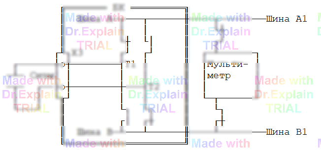

5.2.14 Команда ИЕ — измерение ёмкости
Назначение. Команда контролирует электрическую ёмкость между указанными точками и заносит результат в протокол выполнения. Измерение выполняется внешним цифровым мультиметром (либо встроенным В7‑87), у которого есть режим Capacitance.
Функция измерения ёмкости присутствует только в некоторых моделях Agilent/Keysight; при выборе прибора проверьте документацию.
Сводный формат
МЕТКА ИЕ [Нижний<…<Верхний] *Общ,Точка[,Точка...]* [t=выдержка]
- Диапазон контроля — от 1 пФ до 10 000 µФ. Нижняя граница обязательна, верхнюю можно опустить.
- Погрешность контроля ± 5 %.
- Список точек задаётся фрагментами через символ *: измеряется ёмкость между первой («общей») точкой фрагмента и каждой из последующих. Минус мультиметра подают на общую точку, плюс — на измеряемую.
- Опционально допускается t=… мс — выдержка перед измерением (1 – 99 990 мс).
Пример вызова
280 ИЕ 18<µФ<22 *Ш3/35,Ш3/53*
Функциональная схема измерения дополнительным вольтметром (а также встроенным В7-87)
